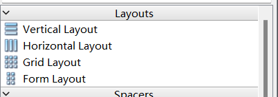

pyqt5前端框架与Fluent Design 风格组件库小记录
原生pyqt
- 直接去github上clone个thetheorange大佬的项目，再看他在博客园上发的博客，跟着依葫芦画瓢，你就学会了
- 不是qt开发，是web开发，但是好看的ai应用界面，github链接
- 上述所说的nextchat预览
fluent
bilibili【PyQt-Fluent-Widgets: 基于 PyQt/PySide 的 Fluent Design 风格组件库】
fluent组件库的官方文档
安装读官方文档即可。1
pip install "PyQt-Fluent-Widgets[full]" -i https://pypi.org/simple/
添加designer-fluent启动的外部工具
- 学到了一个很好的脚本打开方式，新建一个这样的txt记事本文件，然后把后缀名改成.bat,最后放到外部工具里，
1 | @echo off |
- 比如说，我的是这样的：
1 | @echo off |
- 如果报错了，那么就一句一句复制贴贴到cmd里，看看哪里出问题。比如说，我们那时候，作者似乎不小心把tools文件夹给删了。。。这时候切换分支即可。
例子：
1 | /d |
- 没问题的话可以添加到pycharm里：
文件/设置/工具/外部工具/+
写上你工具的路径名，起个顺眼的名字。
当然你也可以用c/c++等语言写出来，编译，然后放exe文件。
实战问题大全和解决方法
在designer里设置的背景图片和icon在python里打开看不到
因为uic.loadUi 这个方法已经把背景图片和icon加载进去了
其实你可以换另一种方法，就是Designer里面不设置icon和背景图片，但在py里面设置
外部的图片 icon 资源不要在ui文件中引用 应在外部的py文件里写入。这么做有三个好处，一是分离资源，方便后续的管理，二是方便调试和自定义操作，三是可以减少ui文件的体积
解决未铺满问题
首先要用布局器进行布局 而不是frame

虽然frame一定程度上能对控件进行分类，但是效果不如布局器的好
尽量用Widget作为新建窗口 使用MainWindow的话，一是语义不符，二是有些臃肿1
2
3
4# 在每个窗体的py文件里面加上 这三行代码 保证布局的稳定
QApplication.setHighDpiScaleFactorRoundingPolicy(Qt.HighDpiScaleFactorRoundingPolicy.PassThrough)
QApplication.setAttribute(Qt.AA_EnableHighDpiScaling)
QApplication.setAttribute(Qt.AA_UseHighDpiPixmaps)
聊天气泡框
pyinstaller和pipenv：py打包
踩坑记录：
首先用conda不知道为什么会出错。用了Virtualenv。
其次，它有一些import问题。
还是打包简单的项目文件比较好。后面我使用cx_Freeze配合bat后缀文件打包，解决了打包问题。可以看我的另一篇博客